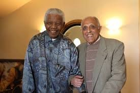

From BBC World Service
Canadians are outliving Americans, in some cases, by as much as a decade. Is public healthcare the secret to longevity?
When Erick Bauer was first diagnosed with cystic fibrosis (CF) as an infant, his parents were told he'd be lucky to make it to his 20th birthday.
Now turning 32 and expecting his first child, Mr Bauer attributes his relatively good health to the close relationship he has with his medical team at St Michael's Hospital in Toronto, which he says helps him maintain a healthy and active lifestyle.
He takes about 60 pills a day to help control the hereditary disease, which can affect the lungs, pancreas and gastro-intestinal tract.
"For all those younger CF patients who live with the disease right now, it is really important to just keep searching for that cure or that control for that disease," he told the BBC. "That is my hope for the future."
Life expectancy for cystic fibrosis patients has increased much faster in Canada than it has in the US, a new study published this month in the Annals of Internal Medicine found.
Canadians living with cystic fibrosis lived on average 10 years longer than Americans with the same disease, in part because of the very different healthcare systems in the two countries, the study found.
Why do Americans die younger than Britons?
When severity of disease, age and other variables were taken into account, Canadians had a 34% lower death rate than American patients overall.
US patients with private insurance had a similar life expectancy as their Canadian counterparts, whereas Canadians had a 44% lower death rate than Americans on Medicaid. The uninsured fared the worst - Canadians had a 77% lower death rate than Americans who had no insurance at all.
Why is Obamacare so controversial?
How does US welfare compare?
"I think there may be some sort of inherent differences in the systems themselves, but teasing it out is hard," says Dr Anne Stephenson, lead author of the study and a researcher at St Michael's Hospital.
Erick Bauer sits in waiting room
Image caption
When Erick Bauer, 32, was born, a patient with cystic fibrosis was only expected to live until 17. Now, Canadian patients have a median expectancy of 51 years
The results of the study did not come as a surprise to Michelle Brotherwood, a registered dietician who spent years working with children with cystic fibrosis in Canada and the US.
Ms Brotherwood spent three years working in a cystic fibrosis clinic in Los Angeles, after working at Dr Stephenson's clinic in Toronto.
The differences, she says, were striking.
"In Canada, I make clinical decisions. I look at their case and I decide whether or not they would benefit from meeting with me. There, the decision is driven by their insurance," she says.
Ms Brotherwood says she had to forgo seeing patients who were in real need, just because they did not have the coverage.
Sometimes, she'd consult with patients who were thriving and did not necessarily need a dietician, simply because their plan covered it.
Even when they were insured, high co-pays meant that some families had to reduce the amount of medication they used, or avoid going to the hospital, she says.
Many researchers have suggested that this profit motive, and the strain it puts on families, may be to blame for the average lower life expectancy in the US.
Although the decade-long Canadian advantage seen in cystic fibrosis study is striking, numerous studies have shown that Canadians tend to outlive their American counterparts.
According to the World Health Organization (WHO), Canadians live almost three years longer than Americans overall.
This difference can be observed in a variety of diseases.
Dr PJ Devereaux, a researcher at McMaster University, says that studies of patients with end-stage renal failure show that Canadians live longer than Americans because the quality of care is better. He says for-profit health clinics in the US spend more on marketing, and less on qualified staff.
"You do not have to be a healthcare expert to recognise that a huge determinate of how you or your loved one will do depends on the quality" of healthcare providers, Dr Devereaux says.
JJ Whicker’s son was diagnosed with cystic fibrosis shortly after being born
But Erin Strumpf, who researches public health at McGill University in Montreal, says it is not so simple.
With so many factors affecting health, such as lifestyle and genetics, it can be difficult to draw broad conclusions about why Canadians live longer. Rates of obesity and smoking, and socioeconomic factors may all impact the different outcomes we see in the US.
"People like the explanation of universal health coverage; people like the explanation of more redistributive social programmes," she says.
"But it is a challenging thing, to really understand what causes those differences."
A 2007 joint-study between the Centre of Disease Control and Statistics Canada found that health outcomes were fairly similar between both countries, with most citizens reporting good health. However, Americans with the lowest income were more likely to report health problems than Canadians (31% v 23%), and when Americans complained of unmet health needs, they were more likely to cite cost as a reason. Canadians were more likely to cite waiting times.
For Ms Brotherwood, the move back to Canada has been a relief, not because the doctors in Los Angeles were anything but excellent, but because she says she grew tired of spending so much energy fighting with insurance companies, instead of providing care.
"Kids would say to me, or teenagers or young adults, 'My family is bankrupt because of my cystic fibrosis,'" she says.
That is something JJ Whicker hopes his son, who was diagnosed with cystic fibrosis shortly after being born last year, will never have to face.
A graduate student in Utah, Mr Whicker was concerned he'd have to quit school.
But he has been relieved to find that Medicaid covers almost all of his son's needs.
As the US government weighs changes to the Affordable Care Act (ACA) and Medicaid, he says he is worried about what the future will hold for families like his who rely on federal programmes to save their children's lives.
"It is something I think about often," he says.
Anti-apartheid activist Ahmed Kathrada, who spent 26 years in jail – many of them alongside Nelson Mandela – for acts of sabotage against South Africa's white minority government, died in Johannesburg on Tuesday morning at the age of 87.
He had been admitted to hospital with blood clotting in his brain earlier this month.
Kathrada was born on August 21, 1929, to Indian immigrant parents in a small town in northwestern South Africa .

He was among those tried and jailed alongside Mandela in the Rivonia trial in 1964, which drew worldwide attention and highlighted the brutal legal system under the apartheid regime.Kathrada was sentenced to life imprisonment in 1964 and spent 26 years and three months in prison, 18 of which were on Robben Island.
After the end of apartheid, he served from 1994 and 1999 as parliamentary counsellor to President Mandela in the first African National Congress (ANC) government.
Diplomats say it's a sad day in South Africa – where Kathrada was affectionately known as "Uncle Kathy" – as tributes poured in about his widely perceived kindness, humility, and honesty.
He had been a major part of many South African's memories over decades of anti-apartheid struggle, Page said.
"I think his passing is sort of signalling to South Africans, yet again, the ending of an era, of these great giants of apartheid [resistance] as they pass on," she added.
Kathrada gave an emotional speech at Mandela's funeral, in which he said he had lost a brother.
Kathrada was, until recently, still active in public life. He formed his own foundation and advocated strongly for human rights causes such as youth development, anti-racism, and freedom of speech.
Last year, he joined a movement of veteran figures who were critical of the governing ANC and its current crop of leaders - particularly President Jacob Zuma , who has been mired in mounting allegations of corruption . Kathrada penned an open letter to the president and called on him to step down.
"Right to the very end he kept himself relevant, he was a newsmaker, he was honest and true to his values and his beliefs," Page said. "And that's why so many millions of South Africans will be very sad at his passing today."
"This is a great loss to the ANC, the broader liberation movement and South Africa as a whole," Neeshan Balton, head of the Ahmed Kathrada Foundation, said in a statement.
"'Kathy' was an inspiration to millions in different parts of the world."
Kathrada's activism against the white-minority apartheid regime started at the age of 17, when he was one of 2,000 "passive resisters" arrested in 1946 for defying a law that discriminated against Indian South Africans.
In July 1963, the police swooped on Liliesleaf Farm in Rivonia, a Johannesburg suburb where Kathrada and other senior activists had been meeting in secret.
At the famous Rivonia trial, eight of the accused were sentenced to life imprisonment with hard labour on Robben Island.
His fellow prisoners included Mandela, Walter Sisulu and Denis Goldberg.
By John Kotsopoulos, University of Pretoria, South Africa
The signing of the Treaty of Rome, which established the European Economic Community (EEC) 60 years ago in March 1957, came at a tumultuous time in relations between Europe and Africa.
Just weeks earlier Kwame Nkrumah had declared Ghana a republic, an event which was a turning point in the decolonisation of sub-Saharan Africa.
Nkrumah remarked that the treaty's inclusion of colonial territories was to neocolonialism what the Berlin Treaty of 1885 had been to colonialism.
He had a point. Two of the six founding members of the EEC - Belgium and France - still held substantial colonial interests on the continent. Accession to the community thus posed the crucial question of what to do about them.
The question became contentious enough to threaten the collapse of the entire Treaty of Rome negotiation process. The other four members of the EEC were Germany, Italy, Luxembourg and the Netherlands.
France in particular was steadfast that its colonies be "associated" with the community. Paris envisaged that its preferential colonial terms of trade would be extended to the entire EEC. But Germany and the Netherlands were opposed, wary of being forced to share the financial and political responsibilities that came with trading with former colonies.
The French argument ultimately won, albeit with some compromises. The treaty's association agreement would last five years and the preferences France enjoyed from its colonies would be gradually expanded to the rest of the EEC.
The agreement, inscribed into articles 131-136 of the treaty, served as the originator of Europe's subsequent relationship with the African, Caribbean and Pacific Group of States (ACP). This was codified in the Yaoundé Agreements, the Lomé Convention and today's Cotonou Agreement.
So this 60th anniversary is not just about Europe. The treaty created a framework for multilateral relations between Europe and Africa.
The principles of trade and aid enshrined in the treaty's association agreement form the basis of Europe's development agenda in Africa to this day, even though relations have expanded into many more areas in the 21st century.
A common future
The Treaty of Rome laid out the blueprint for the creation of the world's largest single market. It also contributed to the post World War II process of cooperation and reconciliation in Europe.
The push for European unity persisted for 37 years, culminating in the creation of the European Union (EU) under the Maastricht Treaty in 1993.
Although difficult to imagine amid the doom and gloom of Brexit, rising populism and the migration crisis, there is still reason to celebrate when you consider the region's relationship with Africa.
The EU, for all of its troubles, has generally been a progressive partner to Africa, especially with respect to the establishment of the Joint Africa-EU Strategy and the unique programming efforts it has generated.
This of course does not negate instances of neocolonialism, nor the damage done by the clumsy promotion of the European Partnership Agreements (EPAs).
The EPAs in particular remain a sore point. Indeed, the preferential trade terms given to African countries by EU member states have been judged discriminatory and in contravention of World Trade Organisation rules.
Sponsored
In The Style Of: Melissa McCarthy
She's 'The Boss' when it comes to the red carpet, and we love to 'Spy' on her style selections. Bringing 'The Heat' to the world of fashion, it's ...
Beyond the EPA debate, a number of factors have contributed to challenges facing some of the original asymmetries between the two sides.
For one, the global South, and China in particular, continues to alter global trade dynamics. African countries and regional organisations now have more trading partners to turn to.
In addition, Africa is in the middle of constructive upheaval, brought on by more than 20 years of robust growth.
The Africa of today is not the Africa of 1957. The African Union is also a more robust partner than its predecessor, the Organisation of Africa Unity.
Back in 1957, the Treaty of Rome laid down the twin principles of EU-Africa relations throughout the 20th century and beyond: trade and aid. These principles were framed within the larger idea of development cooperation.
The association agreement provided reciprocal trading arrangements between 31 'overseas territories' - including 18 African ones - and the ECC countries. An overseas development fund was also created, with all six EEC members contributing to it.
Controversially, the agreement served to perpetuate African dependency on Europe. Even the Lome Convention's much touted "non-reciprocal" principle, which was supposed to nurture African industries, further attached them to Europe.
The convention eventually met strong criticism as a system of "collective clientelism", which was perpetuating dependency and "elite capture" in Africa.
This contradictory relationship between dependency and progressive thinking has made Africans understandably circumspect.
The twin principles of trade and aid still exist. But the growth of the EU-Africa partnership since 2000 - outside of EU-ACP channels - has broadened the relationship into less traditional areas such as science and technology, higher education, private investment, infrastructure and continental integration.
But Kwame Nkurumah's 1957 criticism is still being levied at the EU today for its alleged neocolonial promotion of the EPAs. Pundits in East and Central Africa have been vociferous in their opposition to the agreements.
However, EU officials have a dramatically different interpretation. The EU Commissioner for International Cooperation and Development, Neven Mimica, described the 2016 EPA with six Southern African Development Community (SADC) members as helping to tap the economic potential of the private sector and increase trade.
With such contrasting perceptions, it is perhaps unsurprising that SADC is the only regional body to have signed an EPA with the EU despite more than 10 years of negotiation.
What is crucial is that both sides recognise how far they have come since the Treaty of Rome. And that they accept that a more equitable partnership requires continued commitment to cooperation.
Egypt is known as the land of Pharaohs. Years after the reign of Pharaohs, archaeologists are trying to find more and more remains and evidences of this past world. A statue believed to depict Pharaoh Ramses II has been excavated, an important relic, which could help spur the country's tourism.
A 26ft (6 metre) statue has been discovered by Egyptian and German archaeologists near the ruins of Ramses II temple. The 3,000 year old statue was lifted with cranes in the ancient city of Heliopolis in what has been described as a great moment for archaeology. Alongside the statue believed to depict Ramses II, they also found a limestone statue of Pharaoh Seti II, Ramse's II grandson.
According to the BBC, the relics were found in the north-east of Cairo, close to the temple of Ramses II, also known as Ramses the Great, and experts believe it may represent Ramses II. Ramses the Great was the most powerful and celebrated ruler of ancient Egypt.
It is believed he extended the power of Egypt all the way to Syria and Sudan. He ruled between 1279 to 1213BCE.
The torso of the statue was hauled out from deep muddy groundwater using a crane and bulldozer. Last week Thursday, the giant head of the statue was excavated. These excavations are likely to boost Egypt's tourism sector which suffered set back after the Egyptian revolution.
The Ministry of Antiquities said the statue's parts would be moved and assembled at the Egyptian museum in central Cairo. It's hoped that it will be possible to put the two large pieces together.
Once put together and analysed, the two pieces will be moved to the Grand Egyptian museum near the Giza Pyramids, which will open next year. The statue is reportedly made out of quartzite.
The statue was submerged in ground water in a Cairo slum. Many of the residents cheered as the statue was lifted. Residents could be seen taking selfies with the statue. Present during the excavation were the Egyptian Minister of Antiquities, Khaled el-Anani, German ambassador to Egypt Julius Georg Luy. The University of Leipzig and the Ministry of Antiquity in Egypt had a joint effort in the project. The University of Leipzig has been working in ancient Heliopolis, where the statue was found, for more than a decade.